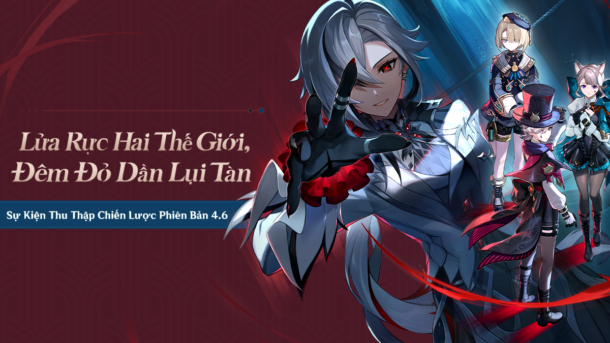
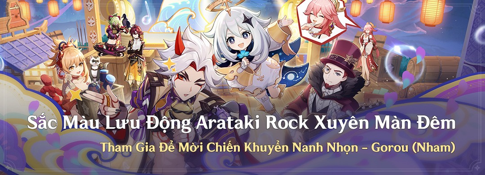

Ra mắt phiên bản 4.6"LỬA RỰC HAI THẾ GIỚI, ĐÊM ĐỎ DẦN LỤI TÀN"
 Cùng xem qua trailer giới thiệu về Vị quan chấp hành thứ 4 của Fatui
Cùng xem qua trailer giới thiệu về Vị quan chấp hành thứ 4 của Fatui
DOWNLOAD GAME TẠI ĐÂY
Trailer giới thiệu nhân vật mới: ARLECCHINO
Hướng Dẫn Nhiệm Vụ Truyền Thuyết "Chương Tịnh Luyện Hỏa" Nhà Lữ Hành đạt Hạng Mạo Hiểm và hoàn thành các nhiệm vụ tương ứng, có thể dùng "Chìa Khóa Truyền Thuyết" để mở Nhiệm Vụ Truyền Thuyết "Chương Tịnh Luyện Hỏa" của Arlecchino. Để mở khóa tính năng Nhiệm Vụ Truyền Thuyết cần đạt hạng mạo hiểm cấp 26. Thông qua nhận thưởng Ủy Thác Mỗi Ngày để nhận Chìa Khóa Truyền Thuyết, mỗi khi nhận thưởng Ủy Thác Mỗi Ngày 8 lần sẽ nhận được một chìa khóa.
"Tất cả kế hoạch đều cần người thực hiện Để ánh trăng đỏ nhuộm đỏ băng tuyết Để bản nhạc chìm dưới biển sâu vang lên Để bí mật của cát không còn im lặng Cuối cùng, đợi kết quả được định sẵn xuất hiện! "
Cốt chuyện chính tuyến của bản 4.6
Trở thành trẻ mồ côi của một dòng tộc là chuyện rất bi thương. Điều này cũng đồng nghĩa với việc cô ấy phải tự tìm kiếm ý nghĩa còn sót lại và dựa vào nó để chống lại vận mệnh.
Sắc Màu Lưu Động Arataki Rock Xuyên Màn Đêm
Nhà Lữ Hành thân mến, với lời giới thiệu trong một lá thư mời đầy nhiệt tình, Nhà Lữ Hành và Paimon đã lên đường tới Đảo Watatsumi...
Sự kiện "Sắc Màu Lưu Động Arataki Rock Xuyên Màn Đêm" sắp mở, cùng tới xem có những cách chơi nào nhé!.
Thất Thánh Triệu Hồi - Chế Độ Nhiệt Huyết
Nội dung Khác